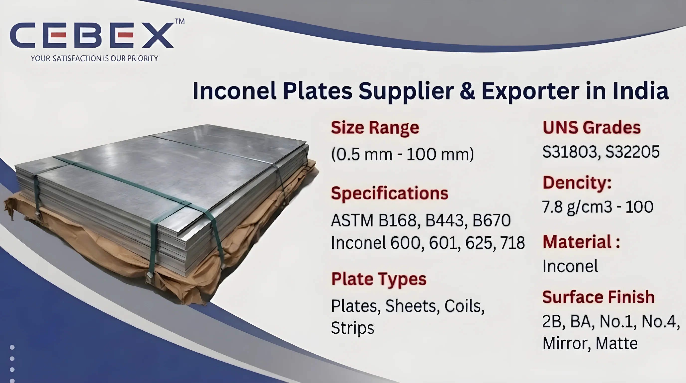

Leading Supplier & Exporter of Inconel Plates in India
Inconel Plates are extensively used in industries requiring exceptional high-temperature strength, oxidation resistance, corrosion resistance, and superior mechanical performance under extreme operating conditions. As a leading Inconel Plate Supplier & Exporter in India, CEBEX STEEL INDIA supplies premium-quality Inconel plates manufactured according to international ASTM, ASME, DIN, EN, and ISO standards for critical industrial and engineering applications.
Our Inconel Plates are widely utilized in aerospace industries, gas turbines, heat treatment equipment, offshore platforms, petrochemical plants, chemical processing facilities, marine systems, nuclear power plants, pressure vessels, and thermal processing equipment because of their outstanding resistance to oxidation, chloride stress corrosion cracking, carburization, and elevated temperatures.
We supply Inconel Plates in multiple grades, thicknesses, finishes, and specifications suitable for fabrication, pressure equipment, furnace applications, exhaust systems, heat exchangers, and corrosive industrial environments. Our product range includes hot rolled plates, cold rolled sheets, polished sheets, shim sheets, coils, strips, and customized Inconel plate products according to customer drawings and industrial project requirements.
At CEBEX STEEL INDIA, we utilize advanced rolling, annealing, leveling, pickling, precision cutting, and finishing technologies to supply Inconel Plates with excellent dimensional accuracy, superior surface finish, and consistent metallurgical properties. Our products are trusted by EPC contractors, engineering companies, fabrication industries, industrial buyers, and infrastructure developers across India, Africa, the Middle East, Europe, and Southeast Asia.

Selecting the right Inconel Plate supplier is essential for ensuring high-temperature performance, corrosion resistance, fabrication quality, and long-term operational reliability. CEBEX STEEL INDIA has established itself as a trusted Inconel Plate Supplier & Exporter in India through strong technical expertise, strict quality assurance systems, and dependable worldwide export services.
We maintain complete traceability from raw material procurement to finished plate dispatch and provide all materials with EN 10204 3.1/3.2 Mill Test Certificates, inspection reports, and export documentation. Our in-house quality department performs comprehensive testing including chemical analysis, mechanical testing, hardness testing, PMI testing, ultrasonic testing, dimensional inspection, and surface quality verification to ensure compliance with ASTM and customer specifications.
Our export logistics team efficiently manages seaworthy packaging, export documentation, and international shipping for smooth worldwide deliveries.
Our Inconel Plates are manufactured using premium-quality nickel-chromium alloy raw materials sourced from approved mills and processed through advanced manufacturing technologies to ensure exceptional corrosion resistance, oxidation resistance, thermal stability, and mechanical strength.
| Feature | Specification / Detail |
|---|---|
| Standards | ASTM, ASME, DIN, EN, ISO |
| ASTM Specifications | ASTM B168, ASTM B443, ASTM B670 |
| Inconel Grades | Inconel 600, Inconel 601, Inconel 625, Inconel 718 |
| UNS Grades | N06600, N06601, N06625, N07718 |
| Thickness Range | 0.3 mm to 100 mm |
| Width Range | 1000 mm to 2500 mm |
| Length Range | 2000 mm to 6000 mm |
| Forms Available | Plates, Sheets, Coils, Strips, Shim Sheets |
| Surface Finish | 2B, BA, No.1, No.4, Mirror Finish, Matte Finish |
| Manufacturing Process | Hot Rolled, Cold Rolled, Annealed, Pickled |
| Documentation | EN 10204 3.1/3.2, MTC, PMI Reports, Inspection Reports |
Our product range includes a comprehensive selection of Inconel Plates suitable for high-temperature and highly corrosive industrial applications. We supply hot rolled Inconel plates for heavy engineering structures and pressure vessels, cold rolled Inconel sheets for precision fabrication applications, polished Inconel sheets for hygienic and decorative applications, and perforated Inconel sheets for filtration and industrial processing systems.
We also supply mirror finish Inconel sheets, shim sheets, coils, strips, chequered plates, CNC-cut plates, and custom fabricated Inconel components according to customer drawings and project specifications.
Material selection plays a critical role in determining oxidation resistance, thermal stability, creep strength, corrosion resistance, weldability, and mechanical performance. We supply Inconel Plates in internationally approved grades suitable for highly aggressive industrial environments and elevated-temperature service conditions.
| Inconel Grade | UNS Number | Typical Applications | Standards |
|---|---|---|---|
| Inconel 600 | N06600 | Furnace Components, Chemical Processing | ASTM B168 |
| Inconel 601 | N06601 | Thermal Processing Equipment, Heat Treatment | ASTM B168 |
| Inconel 625 | N06625 | Offshore Platforms, Marine Systems, Aerospace | ASTM B443 |
| Inconel 718 | N07718 | Aerospace Components, Gas Turbines | ASTM B670 |
All Inconel materials are sourced from reputed mills and supplied with complete traceability, inspection documentation, and EN 10204 3.1/3.2 Mill Test Certificates.
Every Inconel Plate supplied by CEBEX STEEL INDIA includes complete chemical composition and mechanical property reports to ensure compliance with international standards and industrial project requirements.
| Element | Composition (%) |
|---|---|
| Nickel (Ni) | 72.0 Min |
| Chromium (Cr) | 14.0 – 17.0 |
| Iron (Fe) | 6.0 – 10.0 |
| Carbon (C) | 0.15 Max |
| Manganese (Mn) | 1.0 Max |
| Property | Value |
|---|---|
| Tensile Strength | 550 MPa Min |
| Yield Strength | 240 MPa Min |
| Elongation | 30% Min |
| Hardness | 85 HRB Max |
| Element | Composition (%) |
|---|---|
| Nickel (Ni) | 58.0 Min |
| Chromium (Cr) | 20.0 – 23.0 |
| Molybdenum (Mo) | 8.0 – 10.0 |
| Niobium (Nb) | 3.15 – 4.15 |
| Iron (Fe) | 5.0 Max |
| Property | Value |
|---|---|
| Tensile Strength | 827 MPa Min |
| Yield Strength | 414 MPa Min |
| Elongation | 30% Min |
| Element | Composition (%) |
|---|---|
| Nickel (Ni) | 50.0 – 55.0 |
| Chromium (Cr) | 17.0 – 21.0 |
| Niobium (Nb) | 4.75 – 5.50 |
| Molybdenum (Mo) | 2.8 – 3.3 |
| Titanium (Ti) | 0.65 – 1.15 |
| Property | Value |
|---|---|
| Tensile Strength | 965 MPa Min |
| Yield Strength | 550 MPa Min |
| Elongation | 30% Min |
Our quality department conducts spectrographic analysis, tensile testing, hardness testing, ultrasonic inspection, PMI testing, and dimensional verification using calibrated inspection equipment.
| Standard | Grade |
|---|---|
| ASTM | Inconel 600 |
| UNS | N06600 |
| WERKSTOFF NR | 2.4816 |
| DIN | NiCr15Fe |
| Standard | Grade |
|---|---|
| ASTM | Inconel 625 |
| UNS | N06625 |
| WERKSTOFF NR | 2.4856 |
| DIN | NiCr22Mo9Nb |
| Standard | Grade |
|---|---|
| ASTM | Inconel 718 |
| UNS | N07718 |
| WERKSTOFF NR | 2.4668 |
| DIN | NiCr19Fe19Nb5Mo3 |
We supply Inconel Plates in thicknesses ranging from 0.3 mm to 100 mm with customized cutting services according to project requirements. Standard plate widths range from 1000 mm to 2500 mm while custom dimensions are available upon request.
| Thickness | Approx Weight per Sq. Meter |
|---|---|
| 1 mm | 8.4 Kg |
| 2 mm | 16.8 Kg |
| 3 mm | 25.2 Kg |
| 5 mm | 42.0 Kg |
| 10 mm | 84.0 Kg |
Additional processing services including laser cutting, plasma cutting, shearing, polishing, perforation, bending, and CNC machining are available according to customer specifications.
Our Inconel Plates are extensively used in industries requiring exceptional resistance to oxidation, carburization, thermal fatigue, seawater corrosion, and high-temperature mechanical stress. Aerospace industries utilize Inconel plates for turbine blades, exhaust systems, combustion chambers, and aircraft engine components because of their superior thermal stability and creep resistance.
Petrochemical and chemical processing industries use Inconel plates for reactors, pressure vessels, heat exchangers, and thermal processing systems operating under highly corrosive and elevated-temperature conditions. Inconel plates are also widely used in marine engineering, offshore platforms, nuclear power plants, gas turbines, pollution control systems, pharmaceutical industries, and industrial engineering projects.
Quality assurance is one of the core strengths of our supply and export operations. Every Inconel Plate undergoes strict inspection and testing procedures including dimensional inspection, chemical analysis, hardness testing, tensile testing, PMI testing, ultrasonic testing, and visual surface inspection.
Our quality control department utilizes advanced inspection equipment including spectrometers, hardness testing machines, ultrasonic flaw detectors, and dimensional measurement systems to ensure compliance with ASTM, ASME, DIN, EN, and customer project requirements.
We understand the importance of secure packaging and timely delivery for industrial and export projects. Our Inconel Plates are packed using export-grade wooden pallets, PVC protective films, waterproof wrapping materials, and seaworthy packaging systems to ensure complete protection during transportation.
Our export logistics department manages complete shipping documentation including commercial invoices, packing lists, certificates of origin, mill test certificates, and inspection reports for smooth customs clearance and worldwide shipping.
As a leading Inconel Plate Supplier & Exporter in India, we have built a strong reputation for supplying high-quality Inconel plates to major projects across Africa. Our export team understands the unique requirements of African industries and ensures smooth, timely deliveries with complete documentation and compliance. From oil and gas to power and infrastructure, our Inconel plates are trusted by clients in Nigeria, Egypt, Kenya, South Africa, Ethiopia and beyond.
In addition to Inconel Plates, we also manufacture and export Stainless Steel Sheets & Plates, Duplex Steel Plates, Super Duplex Plates, Nickel Alloy Plates, Hastelloy Plates, Monel Plates, and Titanium Plates. These high-performance alloy sheets and plates deliver exceptional corrosion resistance, superior mechanical strength, excellent high-temperature stability, and proven long-term reliability in the harshest industrial environments.
Our technical team is ready to help you select the perfect grade, thickness, and finish for your project. Browse our full range:
Clients choose CEBEX STEEL INDIA because of our strong technical expertise, strict quality control systems, competitive export pricing, and dependable worldwide delivery capabilities. We provide flexible order quantities, custom processing services, fast production schedules, and responsive customer support for industrial and EPC projects.
Our engineering team assists clients in selecting the appropriate Inconel grades and specifications based on operating conditions, corrosion exposure, temperature requirements, fabrication needs, and mechanical performance requirements.
Our Inconel Plates comply with ASTM, ASME, DIN, EN, and ISO standards with complete certification and traceability.
We supply Inconel 600, Inconel 601, Inconel 625, and Inconel 718 grades.
Yes, every shipment includes EN 10204 3.1/3.2 Mill Test Certificates along with inspection and testing reports.
We supply Inconel plates in thicknesses from 0.3 mm to 100 mm with custom widths and cut sizes available.
Yes, we provide laser cutting, bending, polishing, shearing, perforation, and CNC machining services according to customer specifications.